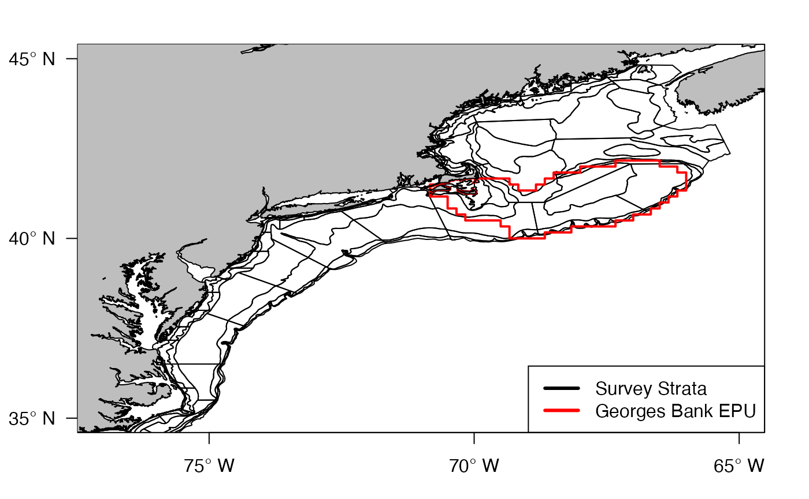
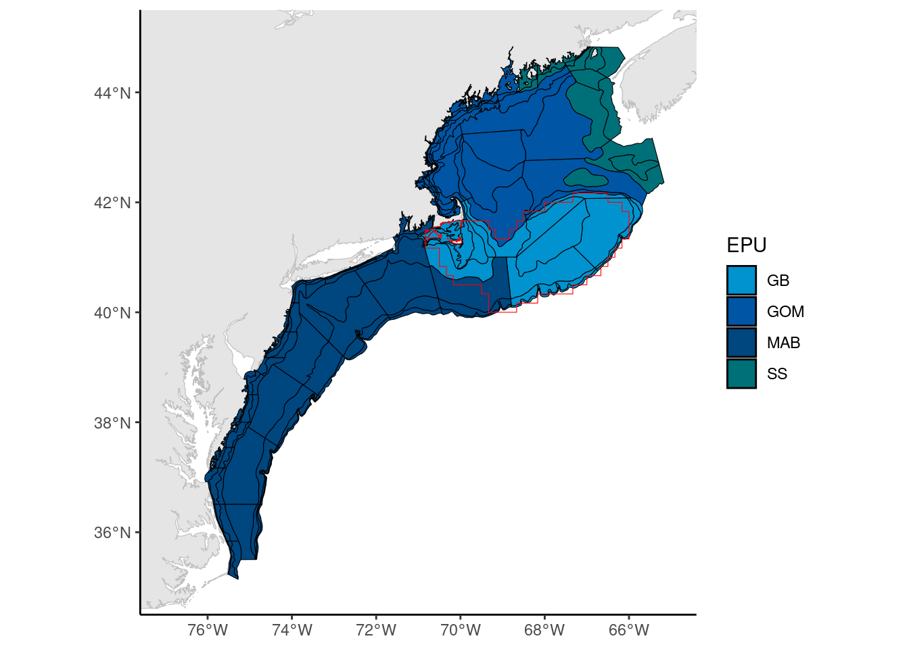
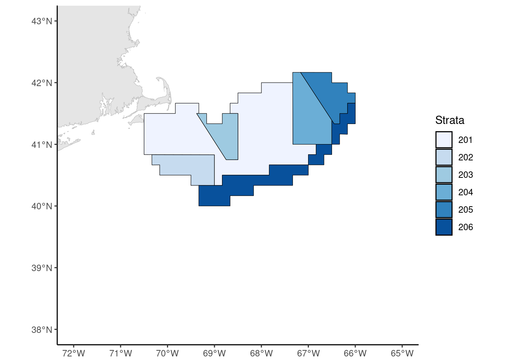
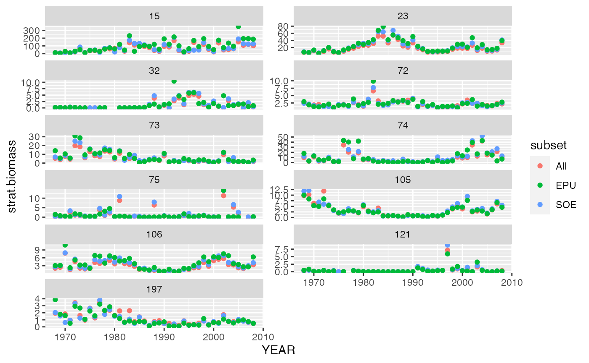

vignettes/GBSurveySet.Rmd
GBSurveySet.RmdDuring the June/July survey (Year, season, area decisions - 8 July 2020) there were two approaches proposed for the spatial footprint of Georges Bank. The ideal footprint would be to define using Georges Bank EPU, scale fisheries catch for each species from stat areas to GB EPU footprint using ratios in spatially explicit VTR subset of catch data.
While work is ongoing towards segregating the fisheries dependent data, there is a decision to make about how to use the fisheries independent survey. The current definition of the EPU is based on ten-minute squares which does not fit with the survey design. This leaves several options of how to use the survey data. The first set of options is to use the survey design and assign survey strata to Georges Bank. The second set of options is to ignore the survey design and either post-stratify or take a simple average within the EPU.
The NEFSC bottom trawl survey uses a stratified random design. The rationale behind a stratified random design is to minimize variance. The figure below shows the full range of strata with the Georges Bank EPU overlaid in red. As you will notice, some of the survey strata extend beyond the EPU boundary. There are several ways that this can be accounted for. The simplest option is to include all strata that are partially within the EPU boundary.
coast <- readOGR(dsn=here::here("data-raw/gis"), layer='NES_LME_coast', verbose = F)
coast <- spTransform(coast, CRS('+init=epsg:4326'))
strata <- readOGR(dsn=here::here("data-raw/gis"), layer='strata', verbose = F)
strata <- spTransform(strata, CRS('+init=epsg:4326'))
epu <- readOGR(here::here("data-raw/gis"), 'EPU_extended', verbose = F)
epu <- spTransform(epu, CRS('+init=epsg:4326'))
GB.strata <- readOGR(here::here("data-raw/gis"), 'EPU_strata', verbose = F)
GB.strata <- spTransform(GB.strata, CRS('+init=epsg:4326'))
MAB <- c(1010:1080, 1100:1120, 1600:1750, 3010:3450, 3470, 3500, 3510)
GB <- c(1090, 1130:1210, 1230, 1250, 3460, 3480, 3490, 3520:3550)
GOM <- c(1220, 1240, 1260:1290, 1360:1400, 3560:3830)
SS <- c(1300:1352, 3840:3990)
opar <- par(mar = c(3, 3.5, 2, 2))
plot(0, 0, xlim = c(-77, -65), ylim = c(35, 45), xlab = '', ylab = '', axes = F,
typ = 'n')
box()
axis(1, at = c(-75, -70, -65), labels = c(expression('75'* degree * ' W'),
expression('70'* degree * ' W'),
expression('65'* degree * ' W')))
axis(2, at = c(35, 40, 45), labels = c(expression(35 * degree * ' N'),
expression(40 * degree * ' N'),
expression(45 * degree * ' N')), las = T)
plot(strata, add = T)
plot(epu[which(epu@data$EPU == 'GB'), ], add = T, border = 'red', lwd = 2)
plot(coast, col = 'grey', add = T)
legend('bottomright', legend = c('Survey Strata', 'Georges Bank EPU'),
col = c('black', 'red'), lty = 1, lwd = 3)
Another option is to include only those strata that are at least 50% within the EPU boundary by area. This was the preferred method of the Northeast IEA program for their State of the Ecosystem report. The map below shows the strata that were included. The medium blue color represents Georges Bank.
opar <- par(mar = c(3, 3.5, 2, 2))
plot(0, 0, xlim = c(-77, -65), ylim = c(35, 45), xlab = '', ylab = '', axes = F,
typ = 'n')
box()
axis(1, at = c(-75, -70, -65), labels = c(expression('75'* degree * ' W'),
expression('70'* degree * ' W'),
expression('65'* degree * ' W')))
axis(2, at = c(35, 40, 45), labels = c(expression(35 * degree * ' N'),
expression(40 * degree * ' N'),
expression(45 * degree * ' N')), las = T)
plot(strata[which(strata@data$STRATA %in% MAB), ], add = T, col = '#0093D0')
plot(strata[which(strata@data$STRATA %in% GB), ], add = T, col = '#0055A4')
plot(strata[which(strata@data$STRATA %in% GOM), ], add = T, col = '#00467F')
plot(strata[which(strata@data$STRATA %in% SS), ], add = T, col = '#007078')
plot(epu[which(epu@data$EPU == 'GB'), ], add = T, border = '#D65f00', lwd = 2)
plot(coast, col = 'grey', add = T)
legend('bottomright', legend = c('Scotian Shelf', 'Gulf of Maine', 'Georges Bank',
'Mid-Atlantic', 'EPU'),
fill = c('#007078', '#00467F', '#0055A4', '#0093D0', NA),
border = c(rep('black', 4), NA),
col = c(rep(0, 4), '#D65f00'), lty = c(rep(NA, 4), 1), lwd = 3,
x.intersp = c(rep(-0.5, 4), 1))
The difference between these two options would be the inclusion of strata 01100, 01110, and 01120 in the southwest corner of the EPU.
Ignoring the survey design leaves us with two options: a straight mean of the EPU or a post-stratified design. The first option creates large variances which make it difficult to conduct any kind of statistical testing. Other previous work by EDAB stratified Georges Bank into large strata based on whether the area was considered open access or withing a closed area, inside or outside of US waters, and the shelf break.
opar <- par(mar = c(3, 3.5, 2, 2))
plot(0, 0, xlim = c(-72, -65), ylim = c(38, 43), xlab = '', ylab = '', axes = F,
typ = 'n')
box()
axis(1, at = c(-75, -70, -65), labels = c(expression('75'* degree * ' W'),
expression('70'* degree * ' W'),
expression('65'* degree * ' W')))
axis(2, at = c(35, 40, 45), labels = c(expression(35 * degree * ' N'),
expression(40 * degree * ' N'),
expression(45 * degree * ' N')), las = T)
plot(GB.strata, add = T, border = '#D65f00', lwd = 2)
plot(coast, col = 'grey', add = T)
To see if there was an noticeable difference between the three options outlined above (All - Any strata that is at least partially within the GB EPU boundary, SOE - strata set used by the State of the Ecosystem report, and EPU - post-stratified EPU) biomass indices were calculated for the top 11 species that will be included in the MS Keyrun project.
library(data.table); library(here); library(rgdal)#; library(Survdat);
library(ggplot2); library(survdat)
#source(here('Survdat.r'))
#load(here('data-raw/data/Survdat.RData'))
load(here('data-raw/data/survdat_Albatross.RData'))
survdat <- survdat.a4$survdat
#Top 10(11) species
top10 <- c(15, 23, 32, 72, 73, 74, 75, 105, 106, 121, 197)
#fix numbers as character
survdat <- survdat[, STRATUM := as.numeric(STRATUM)]
survdat <- survdat[, SVSPP := as.numeric(SVSPP)]
#First with survey strata
strata <- st_read(here::here("data-raw/gis/strata.shp"), quiet = F)
#Run 1 - All strata for GB ()
GB.soe <- c(1090, 1130:1210, 1230, 1250, 3460, 3480, 3490, 3520:3550)
GB.extra <- 1100:1120
#Calculate stratified means
all.mean <- survdat::calc_stratified_mean(survdat,
areaPolygon = strata,
areaDescription = "STRATA",
filterByArea = c(GB.soe,GB.extra),
filterBySeason = "FALL",
groupDescription = "SVSPP",
filterByGroup = top10)
all.mean <- all.mean[, list(YEAR, SVSPP, strat.biomass)]
all.mean[, subset := 'All']
#Run 2 - SOE strata for GB ()
#Calculate stratified means
soe.mean <- survdat::calc_stratified_mean(survdat,
areaPolygon = strata,
areaDescription = "STRATA",
filterByArea = GB.soe,
filterBySeason = "FALL",
groupDescription = "SVSPP",
filterByGroup = top10)
soe.mean <- soe.mean[, list(YEAR, SVSPP, strat.biomass)]
soe.mean[, subset := 'SOE']
#Run 3 - Use EPU strata
#Grab strata
epu <- st_read(here::here("data-raw/gis/EPU_strata.shp"), quiet = T)
#Calculate stratified means
epu.mean <- survdat::calc_stratified_mean(survdat,
areaPolygon = epu,
areaDescription = "Strata",
filterBySeason = "FALL",
groupDescription = "SVSPP",
filterByGroup = top10)
epu.mean <- epu.mean[, list(YEAR, SVSPP, strat.biomass)]
epu.mean[, subset := 'EPU']
#Combine data
combo.data <- rbindlist(list(all.mean, soe.mean, epu.mean))
survey.plot <- ggplot(combo.data,
aes(x = YEAR, y = strat.biomass)) +
geom_point(aes(color = subset)) +
facet_wrap(~SVSPP, ncol = 2, nrow = 6, scales = 'free_y')
plot(survey.plot)
As you can see, all three spatial footprints give similar trends with only minimal differences in the magnitudes. Therefore it was decided at a working group meeting on 11/4/2020 to use the survey strata set from the State of the Ecosystem report. This accomplishes two goals. First it stays consistent with the survey design of the survey. Second it is consistent with other ecosystem products coming out of the Center.